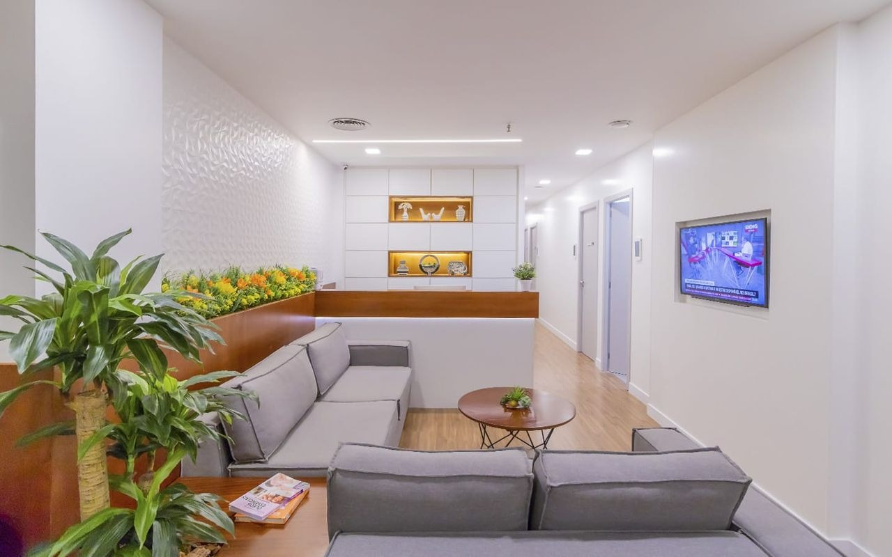
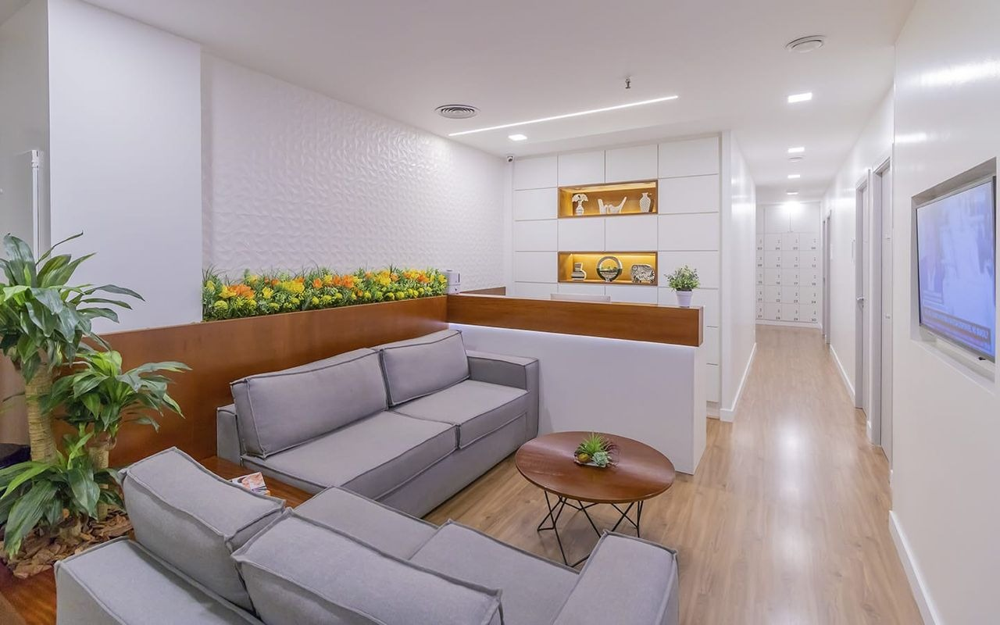
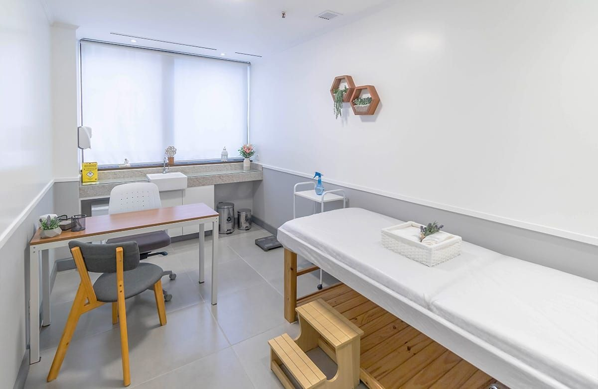

Clínica Médica
Consulta completa com visão integrativa e orientação baseada em evidências.
Atendimento médico integrativo com escuta ativa, plano terapêutico personalizado
e acompanhamento responsável.
Médica Clínica • Medicina Integrativa
CRM 52 99311-5/RJ
Olá, eu sou Nathalia Duarte, médica clínica com mais de 10 anos de experiência em consultório. Minha prática é baseada na Medicina Integrativa, que associa a clínica médica tradicional às terapias complementares, com o objetivo de promover, proteger e recuperar a saúde, proporcionando mais qualidade de vida.
Sou especialista em Homeopatia, pós-graduada em Medicina Chinesa e Acupuntura, com formação em prescrição de Cannabis Medicinal e especialista em Diagnóstico por Imagem. Também realizei cursos de extensão em Psicologia e Neurociência do Comportamento Humano, e atualmente curso pós-graduação em Psiquiatria.
Acredito em uma medicina que olha para a pessoa como um todo, e não apenas para a doença. Busco construir, junto com cada paciente, um plano de cuidado individualizado, considerando sua história, seus sintomas e seu contexto de vida.
Meu compromisso é oferecer um atendimento acolhedor e humanizado, baseado em escuta ativa, comunicação clara e ética, com atenção, disponibilidade e cuidado genuíno em cada etapa do acompanhamento.
"Acredito em uma medicina que olha para a pessoa como um todo, e não apenas para a doença."
Escolha a abordagem mais adequada para seu momento, sempre com critério clínico e acompanhamento.
Consulta completa com visão integrativa e orientação baseada em evidências.
Tratamento individualizado considerando sintomas, história e contexto de vida.
Abordagem da Medicina Chinesa para equilíbrio físico, mental e emocional.
Avaliação, indicação e prescrição responsável conforme necessidade clínica.
Ambiente acolhedor, tranquilo e profissional para seu cuidado.



Atendimento humanizado, com escuta ativa e cuidado verdadeiro.